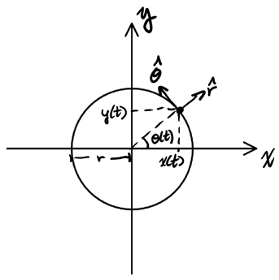
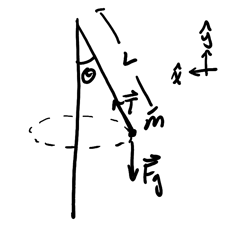
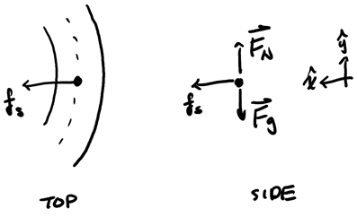
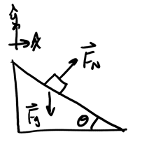
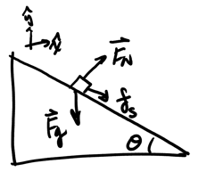
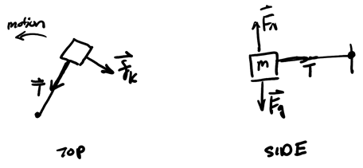
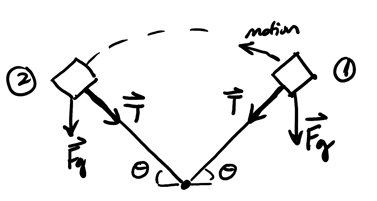

Circular Motion
Table of Contents
1. Circular Motion
Circular motion occurs when an object moves at a constant radius around a center:

We have two unit vectors here, one pointing in the radial direction (\(\hat{r}\)), and one pointing in the tangential direction (\(\hat{\theta}\)).
1.1. Position and Velocity
The position vector \(\vec{r}(t)\) points from the center to the location of the object. As such, we can write it as:
\begin{align} \vec{r}(t) &= r\hat{r} \\ &= r\cos\theta\hat{i} + r\sin\theta\hat{j} \notag \\ &= r(\cos\theta\hat{i} + \sin\theta\hat{j}) \notag \end{align}We can also use this to derive tangential velocity:
\begin{align} \vec{v}(t) &= r\frac{\text{d}\theta}{\text{d}t}(-\sin\theta\hat{i}+\cos\theta\hat{j}) \notag \end{align}Which yields:
\begin{align} \boxed{\vec{v}(t) = r\omega \hat{\theta}} \end{align}Here, \(\omega\) is angular velocity, which is defined to be \(\frac{\text{d}\theta}{\text{d}t}\) (how fast the angle \(\theta\) is changing).
1.2. Acceleration
We can also derive the acceleration from the velocity:
\begin{align} \vec{a}(t) &= \frac{\text{d}\vec{v}}{\text{d}t} \notag \\ &= \frac{\text{d}}{\text{d}t}(r\omega \hat{\theta}) \notag \\ &= r \frac{\text{d}\omega}{\text{d}t}\hat{\theta} + r\omega\frac{\text{d}\hat{\theta}}{\text{d}t} \notag \end{align}To find \(\frac{\text{d}\hat{\theta}}{\text{d}t}\), we do:
\begin{align} \frac{\text{d}\hat{\theta}}{\text{d}t} &= \frac{\text{d}}{\text{d}t}(-\sin\theta\hat{i} + \cos\theta\hat{j}) \notag \\ &= \frac{\text{d}\theta}{\text{d}t}(-\cos\theta)\hat{i} - \frac{\text{d}\theta}{\text{d}t} \sin \theta \hat{j} \notag \\ &= -\omega(\cos\theta\hat{i} + \sin\theta\hat{j}) \notag \\ &= -\omega\hat{r} \notag \end{align}Therefore, acceleration is:
\begin{align} \boxed{\vec{a} = r\frac{\text{d}\omega}{\text{d}t}\hat{\theta} - r\omega^2\hat{r}} \end{align}We can see that the acceleration is made up of a tangential component (\(\hat{\theta}\)) and a radial component (\(\hat{r}\)).
However, for uniform circular motion (i.e. when \(\omega\) is constant), there is no tangential acceleration, so we only have centripetal acceleration, which points toward the center of the circle:
\begin{align} \boxed{a_r = r\omega^2 = \frac{v^2}{r}} \end{align}Example: Concial pendulum
Consider a ball of mass \(m\) spun around on a string:

Assume uniform circular motion with angle \(\theta\). We want to find the speed \(v\) of the ball as it is spinning. Assume that there is no air resistance.
We choose the x-axis pointing toward the center because \(\vec{a}\) points toward the center. By Newton's 2nd law, we have:
\begin{align} T\sin\theta &= ma_x \notag \\ T\cos\theta - mg = ma_y \notag \end{align}Since the ball remains in the same horizontal plane as it is spinning, \(a_y=0\), thus:
\begin{align} T\cos\theta &= mg \notag \\ T &= \frac{mg}{\cos\theta} \notag \end{align}By (4), we know that \(a_x = \frac{v^2}{r}\) with \(r=L\sin\theta\), so:
\begin{align} T\sin\theta &= ma_x \notag \\ \frac{mg}{\cos\theta}\sin\theta &= m \frac{v^2}{L\sin\theta} \notag \\ g\tan\theta &= \frac{v^2}{L\sin\theta} \notag \\ v^2 &= g\tan\theta L\sin\theta \notag \end{align}Thus, the velocity is:
\begin{align} \boxed{v=\sqrt{Lg\sin\theta\tan\theta}} \notag \end{align}1.3. Centripetal Force
In order for an object to stay in circular motion, there must be some centripetal force pointing towards the center that is acting on the object (otherwise, the object would just fly away). In the conical pendulum example above, that centripetal force was provided by a component of the tension force in the string. In the unbanked curve example below, the centripetal force would be provided by static friction acting on the car.
2. Highway Curves
An example of uniform circular motion occurs when a car rounds a curve at constant velocity. We shall consider two types of curves: unbanked and banked curves.
2.1. Unbanked Curves
Unbanked curves are curves where there is no elevation change between the inner and outer side, i.e. the curve is flat. As a car rounds the curve, the car's inertia attempts to pull it away from the curve in a straight line. In order to counteract this tendency, static friction must pull the tires in towards the center of the curve, providing the centripetal force to keep the car on the turn:

Example: Car on flat curve
We want to find the maximum velocity such that the car would still stay in a turn, i.e. the static friction is enough to keep the car from sliding. Using Newton's 2nd law, we can find the normal force on the car:
\begin{align} F_N - mg &= 0 \notag \\ F_N &= mg \notag \end{align}By Newton's 2nd law on the x-direction, we have:
\begin{align} mg\mu_s &= m\frac{v^2}{r} \notag \\ \mu_sg &= \frac{v^2}{r} \notag \\ v^2 &= r\mu_s g \notag \end{align}Therefore, the maximum velocity the car could go at without sliding is:
\begin{align} \boxed{v_{\text{max}} = \sqrt{\mu_s gr}} \notag \end{align}2.2. Banked Curves
A car can also round a banked curve, which as opposed to a flat curve is angled toward the center, like so:

Notice that in this one, the normal force on the car provides a radial component that can be used as the centripetal force. This means that at a particular speed, we do not need any friction on the tires in order to keep the car in a curve.
Example: Car on banked curve
Consider a car rounding a banked curve with angle \(\theta\), as shown in the figure above. We want to find the ideal speed \(v_0\) such that there is no static friction necessary to maintain uniform circular motion.
By Newton's 2nd law, we have:
\begin{cases} F_N\sin\theta = m\frac{v_0^2}{r} \\ F_N\cos\theta = mg \end{cases}From the second equation, we see that \(F_N = \frac{mg}{\cos\theta}\). Therefore, substituting this into the first equation, we have:
\begin{align} mg\tan\theta &= m\frac{v_0^2}{r} \notag \\ rg\tan\theta &= v_0^2 \notag \end{align}Therefore, the ideal speed \(v_0\) is:
\begin{align} \boxed{v_0 = \sqrt{gr\tan\theta}} \notag \end{align}Example: Car on banked curve with friction
Consider a car rounding a banked curve, this time with static friction involved:

This implies that the car is going faster than the ideal speed for its tires, i.e. without any friction. By Newton's 2nd law, in the presence of static friction we have:
\begin{cases} F_N\sin\theta + f_s\cos\theta = m\frac{v_\text{max}^2}{r} \\ F_N\cos\theta - f_s\sin\theta - mg = 0 \end{cases}Solving for \(F_N\), we have:
\begin{align} F_N\cos\theta - \mu F_N \sin\theta &= mg \notag \\ F_N(\cos\theta - \mu sin\theta) &= mg \notag \end{align}Thus, isolating \(F_N\):
\begin{align} F_N = \frac{mg}{\cos\theta - \mu\sin\theta} \notag \end{align}We can now simplify the first equation:
\begin{align} F_N\sin\theta + \mu F_N \cos\theta &= m\frac{v_\text{max}^2}{r} \notag \\ \frac{g}{\cos\theta - \mu\sin\theta}(\sin\theta + \mu\cos\theta) & = \frac{v_{max}^2}{r} \notag \end{align}Therefore, for \(v_\text{max}\) we get:
\begin{align} \boxed{v_\text{max} = \sqrt{\frac{gr(\sin\theta+\mu\cos\theta)}{\cos\theta - \mu\sin\theta}}} \notag \end{align}3. Non-Uniform Circular Motion
Non-uniform circular motion occurs when velocity is not constant. In these cases, since there is a velocity change, there will also be tangential acceleration: the change in tangential velocity. We can often find tangential acceleration by considering Newton's 2nd law with respect to a tangential force.
Example: Block spinning on table
Consider a block spinning on a table in the horizontal plane with kinetic friction, which slows its velocity down:

Since the tangential force is friction, Newton's 2nd law tells us that:
\begin{align} -\mu F_N &= ma_T \notag \\ a_T &= \frac{-\mu F_N}{m} \notag \end{align}Since the block moves on a horizontal plane, we know that \(F_N = mg\), so:
\begin{align} \boxed{a_T = -\mu g} \notag \end{align}Notice how since the tangential acceleration is less than 0, the system is slowing down.
Example: Block spinning in air
We can also have a block spinning in the vertical plane in air, like so:

In this case, a component of gravity provides a force that slows the system down or speeds it up. If the positive tangential direction is in the direction of motion, then at point (1) we have:
\begin{align} a_T = \frac{-mg\cos\theta}{m} = -g\cos\theta < 0 \notag \end{align}This means that the block is slowing down at (1). However, at (2) we have:
\begin{align} a_T = \frac{mg\cos\theta}{m} = g\cos\theta > 0 \notag \end{align}This means that the block is speeding up at (2). Notice how there are two points of local uniform circular motion at the top and bottom of the trajectory where the net force is purely centripetal.